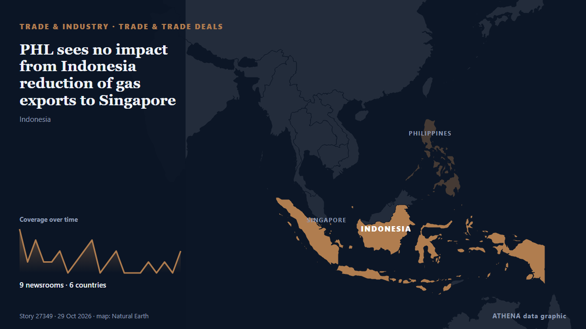

PHL sees no impact from Indonesia reduction of gas exports to Singapore

The Philippines has been assured of continued coal and gas supplies from Indonesia, Energy Secretary Sharon… из BusinessWorld
Независимые источники: 9 изданий в 6 странах, с 24 окт.; первым сообщил Antara (English); освещение идёт на спад. ATHENA оценивает риск как низкий (1.9/10), прежде всего из-за тяжести описываемого ущерба и географического и отраслевого охвата. Уверенность — 81 % (высокая); подтверждают независимые источники: 9 изданий, средняя надёжность источников — 73 %.
Почему это важно: Сбои в торговле, промышленности или инфраструктуре распространяются по цепочкам поставок, меняя издержки и сроки далеко от источника.
Что изменилось: 3 новых сообщений от 2 редакций за 24 часа до 29 окт..
Первый заголовок: Indonesia says gas export cuts to Singapore conform to contracts
Заголовки приводятся на английском языке, как они были опубликованы.
Коротко в цифрах
Отобрано, оценено и написано по опубликованной методологии ATHENA. Ни один редактор не вмешивается в отдельные события. Как это создаётся ›
| 24 Oct 08:49 UTC | 4 |
|---|---|
| 24 Oct 14:49 UTC | 1 |
| 24 Oct 20:49 UTC | 3 |
| 25 Oct 02:49 UTC | 1 |
| 25 Oct 08:49 UTC | 1 |
| 25 Oct 14:49 UTC | 2 |
| 25 Oct 20:49 UTC | 0 |
| 26 Oct 02:49 UTC | 1 |
| 26 Oct 08:49 UTC | 2 |
| 26 Oct 14:49 UTC | 3 |
| 26 Oct 20:49 UTC | 0 |
| 27 Oct 02:49 UTC | 1 |
| 27 Oct 08:49 UTC | 2 |
| 27 Oct 14:49 UTC | 0 |
| 27 Oct 20:49 UTC | 0 |
| 28 Oct 02:49 UTC | 0 |
| 28 Oct 08:49 UTC | 1 |
| 28 Oct 14:49 UTC | 0 |
| 28 Oct 20:49 UTC | 1 |
| 29 Oct 02:49 UTC | 0 |
| 29 Oct 08:49 UTC | 2 |
| 24 Oct 12:55 UTC | 1.3 |
|---|---|
| 24 Oct 21:31 UTC | 2.1 |
| 29 Oct 13:37 UTC | 1.9 |
Откуда эти цифры
Значимость
Риск
Уверенность
Освещение — кто сообщил и когда
заголовок в оригинале · открывает источник- Antara (English) · Индонезия · IndonesiaIndonesia slashes gas exports to Singapore
- CNA (Channel NewsAsia) · Сингапур · SingaporeIndonesia reduces gas exports to Singapore in order to 'safeguard reliability' of domestic supplies
- Mothership · Сингапур · SingaporeIndonesia to cut natural gas exports to S'pore from Oct. 24, 2026, days after minister warns of curbs on countries that ‘disrespect’ it
- CNA (Channel NewsAsia) · Сингапур · SingaporeReduction in Indonesia gas supply amounts to less than 2% of Singapore’s total daily demand: EMA
- Mothership · Сингапур · SingaporeS'pore has sufficient energy supplies, Indonesia's cuts on gas exports less than 2% of daily demand: EMA
- Business Recorder · Пакистан · PakistanIndonesia cuts gas exports to Singapore
- CNA (Channel NewsAsia) · Сингапур · SingaporeSingapore expects all parties to honour commercial gas contracts, says PM Wong after Indonesia cut exports
- CNA (Channel NewsAsia) · Сингапур · Singapore‘Keep calm and carry on’: Indonesia gas cut unlikely to hit Singapore electricity prices, says Tan See Leng
- Mothership · Сингапур · SingaporePM Wong on Indonesia gas export cuts: 'We expect all parties to honour their commitments'
- Mothership · Сингапур · SingaporeS'pore electricity prices would not be affected much in short term: Tan See Leng on Indonesia gas export cut
- The Independent Singapore · Сингапур · SingaporeIndonesia cuts back gas exports to Singapore to safeguard domestic electricity supplies
- Fortune · Соединенные Штаты · United StatesSingapore urges suppliers to ‘honor commitments’, as Indonesia slashes gas exports to the country by 9%
- CNA (Channel NewsAsia) · Сингапур · SingaporeIndonesia's gas cuts to Singapore put spotlight on domestic energy needs, economic trade-offs
- Antara (English) · Индонезия · IndonesiaIndonesia says gas export cuts to Singapore conform to contracts
- The Independent Singapore · Сингапур · SingaporeWorkers' Party regrets Indonesia's decision to reduce its exports of gas to Singapore 'if due to recent unconnected events'
- Mothership · Сингапур · SingaporeWorkers’ Party ‘regrets’ Indonesian govt's decision to cut gas exports to S’pore
- Mothership · Сингапур · SingaporeDon't lecture Indonesia about honouring contracts: Energy minister says gas export cut to S'pore within limits
- Free Malaysia Today · Малайзия · MalaysiaSingapore’s top diplomat heads to Indonesia amid tensions over gas, haze
- The Independent Singapore · Сингапур · SingaporePM Wong: Nuclear energy for Singapore should not be ruled out just because it’s difficult or controversial
- Antara (English) · Индонезия · IndonesiaIndonesia, Singapore FMs meet amid gas export adjustments
- BusinessWorld · Филиппины · PhilippinesPHL sees no impact from Indonesia reduction of gas exports to Singapore
- Malay Mail · Малайзия · MalaysiaLearn from Indonesia-Singapore gas row, build up own energy resources, maritime expert tells govt
- Antara (English) · Индонезия · IndonesiaIndonesia says haze, gas issues will not derail Singapore investment
- Antara (English) · Индонезия · IndonesiaIndonesia puts domestic gas demand ahead of exports to other countries